Challenge 1
Nhìn hình. Chọn đáp án phù hợp.
Người lớn: nguồn/ghi chú
🖼️hình tròn bé đang vẽ ở cặp 1a. Chọn từ/cụm từ đúng.
Đáp án giáo viên xem trong bài nguồn, không hiển thị trước cho bé.
Ảnh WebP nhẹ, không có nhãn đáp án trong bitmap. Câu hỏi và lựa chọn nằm riêng. Audio Challenge do chủ dự án bổ sung; hiện có thể nhờ người lớn đọc từ bài nguồn.
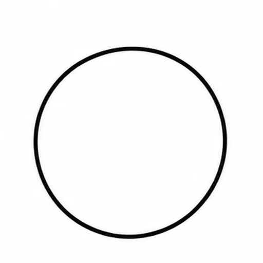
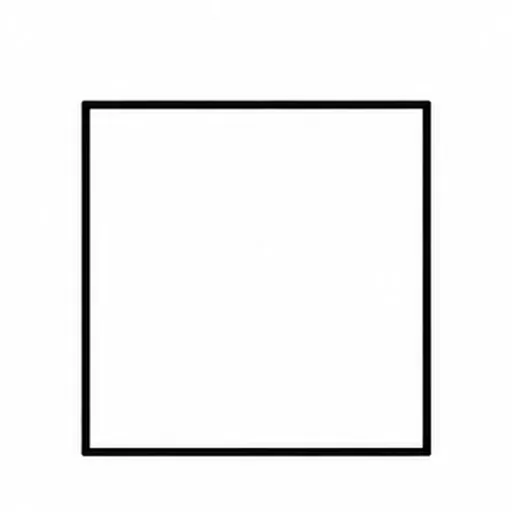
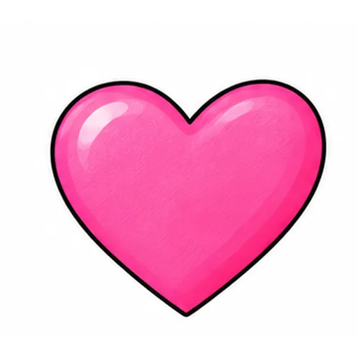
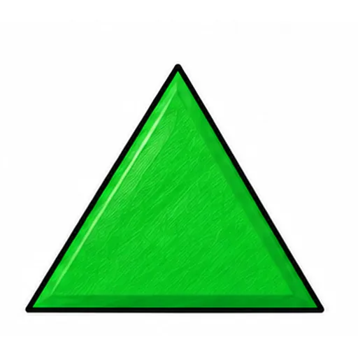
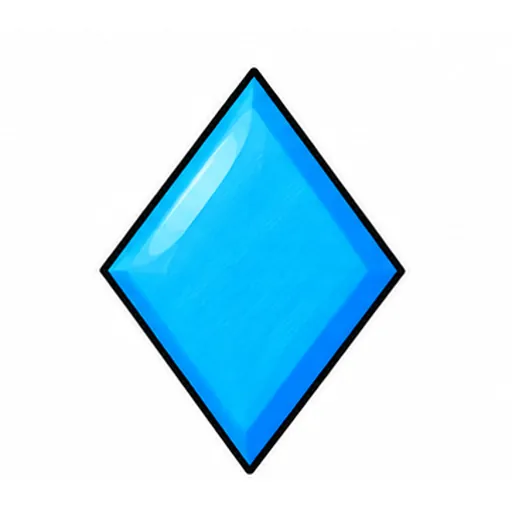
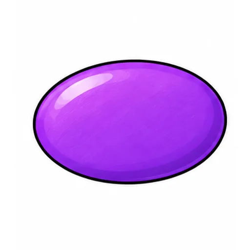
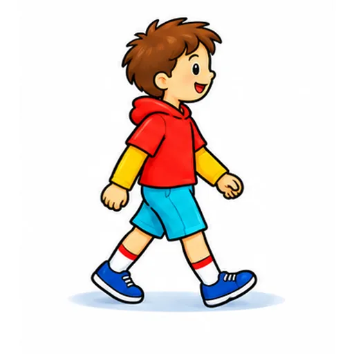
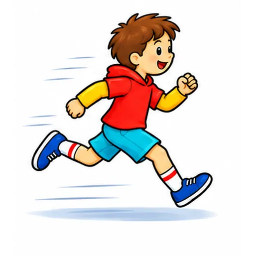
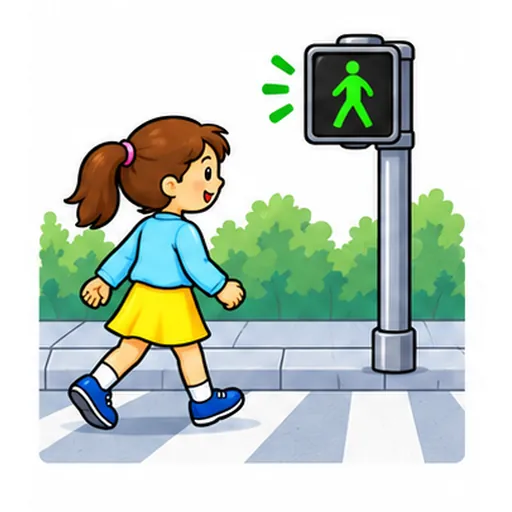
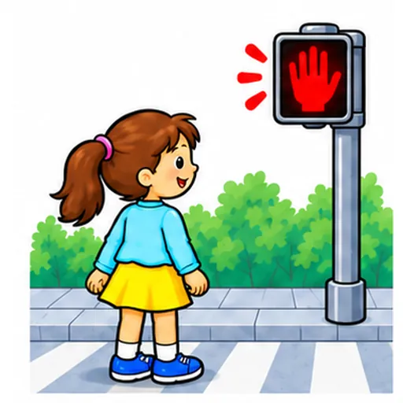
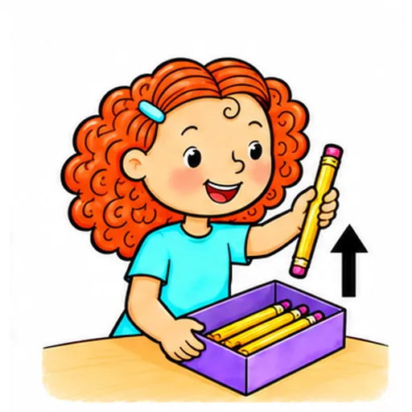
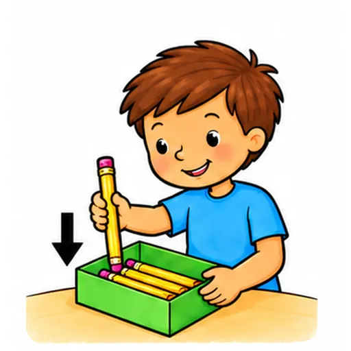
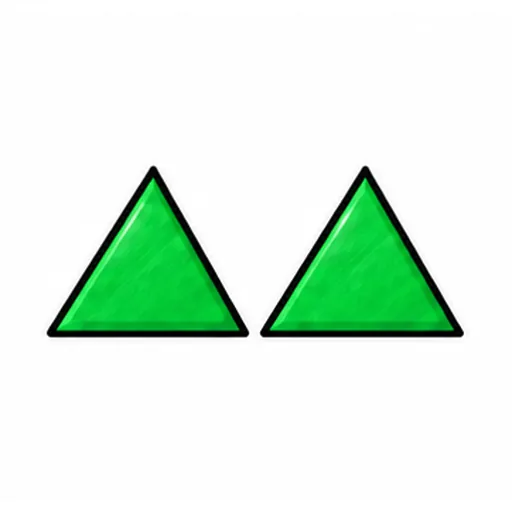
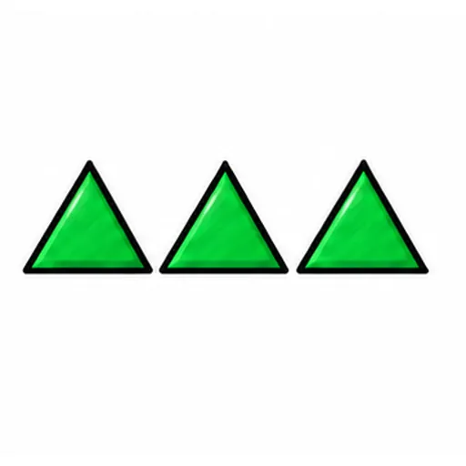
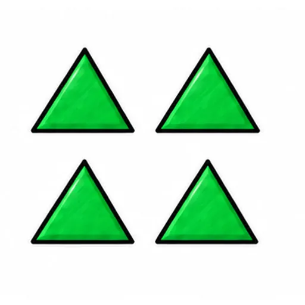
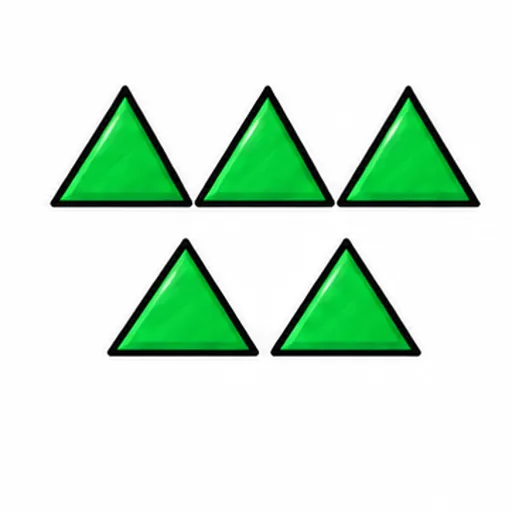
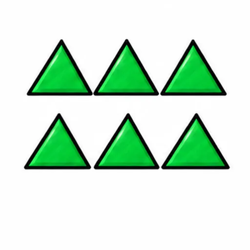
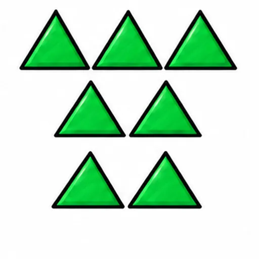
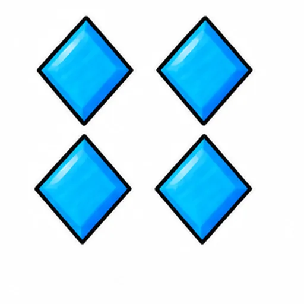
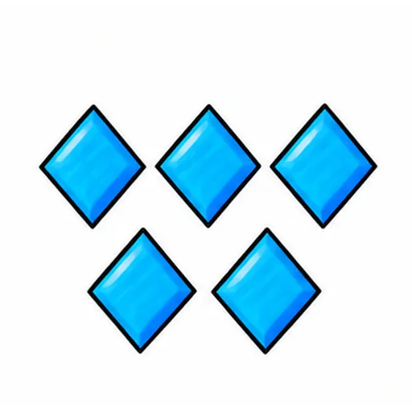
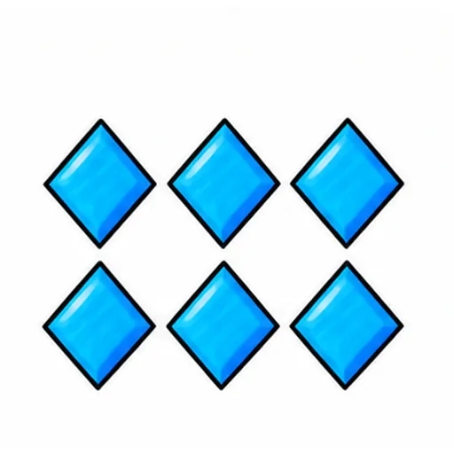
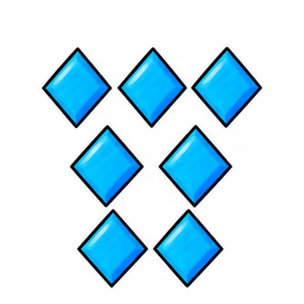
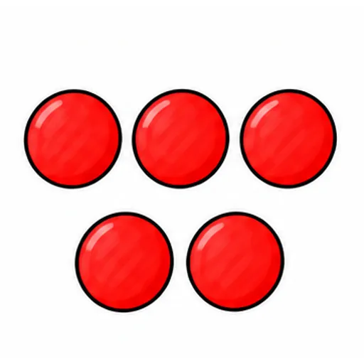
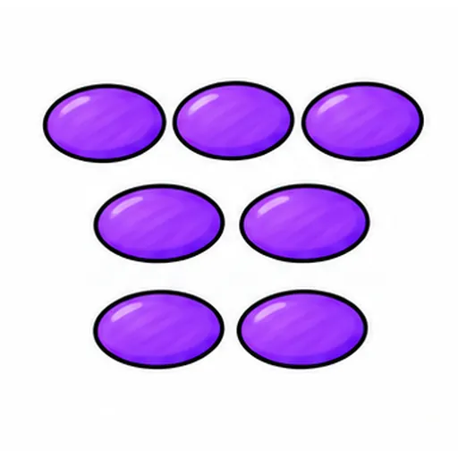
Nhìn hình. Chọn đáp án phù hợp.
🖼️hình tròn bé đang vẽ ở cặp 1a. Chọn từ/cụm từ đúng.
Đáp án giáo viên xem trong bài nguồn, không hiển thị trước cho bé.
Nghe audio hoặc người lớn đọc, rồi chọn đáp án phù hợp.
Nghe từ/cụm từ và chọn đúng mục.
Nghe từ/cụm từ và chọn đúng mục.
Đáp án giáo viên xem trong bài nguồn, không hiển thị trước cho bé.
Nhìn hình. Điền: `________ out your pencil.`.
🖼️lấy bút chì ra. Điền: `________ out your pencil.`.
Đáp án giáo viên xem trong bài nguồn, không hiển thị trước cho bé.
Nhìn hình. Nói hoặc điền câu trả lời của em.
🖼️hình tròn bé đang vẽ ở cặp 1a. Điền chữ cái của thẻ phù hợp.
Đáp án giáo viên xem trong bài nguồn, không hiển thị trước cho bé.
Nhìn hình. Chọn đáp án phù hợp.
Nhìn nhóm 3a: gọi hình và chọn số lượng.
Đáp án giáo viên xem trong bài nguồn, không hiển thị trước cho bé.
Nhìn hình. Nói hoặc điền câu trả lời của em.
Người lớn chỉ/diễn: hình tròn bé đang vẽ ở cặp 1a. Bé tự nói từ/cụm phù hợp.
Đáp án giáo viên xem trong bài nguồn, không hiển thị trước cho bé.
Các câu chưa có cue cố định được ghi trong mapping. Câu trả lời cá nhân không bị ép Yes/No. Toàn bộ bài luyện gốc được giữ nguyên.